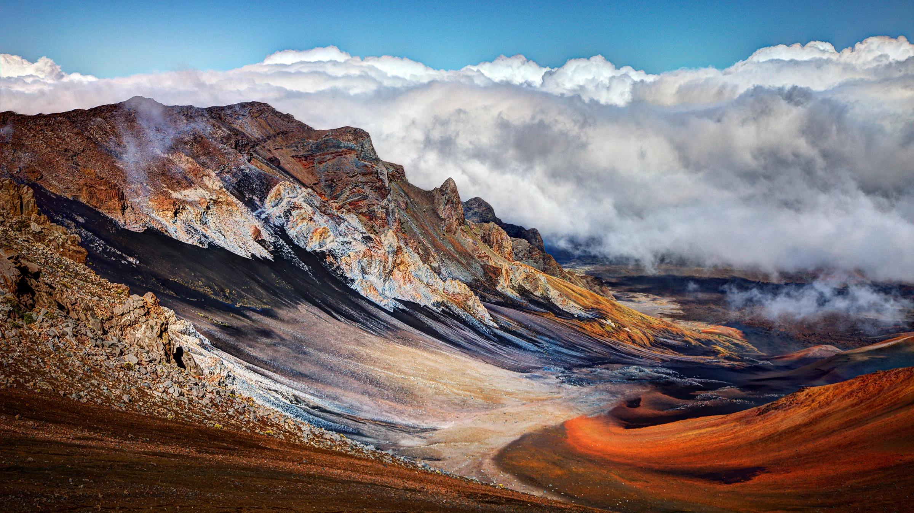

Maui is the second-largest island in Hawaii; a beautiful island with stunning views and pristine beaches.
Haleakala National Park

For some of the coolest views in Maui, visit this national park. It is home to the impressive Haleakala Crater, which may be one of the most amazing spots in the world to watch a sunrise or sunset.You can explore the Summit District, which has rugged rocks and barren deserts full of unique colors and wildlife.
Hamoa Beach
Surrounded by rich jungle and pumping waves, this is the perfect place to spend a day exploring, surfing, swimming, and relaxing in paradise.
Kaihalulu Beach
Kaihalulu Beach has rich red sand and is set in a protected, rocky cove. You have to hike a rather dangerous trail to get there, but the secluded spot is colorful and jaw-droppingly beautiful.
Hana
The road to Hana is considered one of the best drives in the USA as you'll pass lots of amazing scenery. Hana offers lots of opportunities for exploring nature and trying water sports. Be sure to visit Wai’anapanapa State Park where you can snorkel, swim, fish, and admire crazy sights like unusual geological rock shapes, volcanic caves, and black sand beaches.